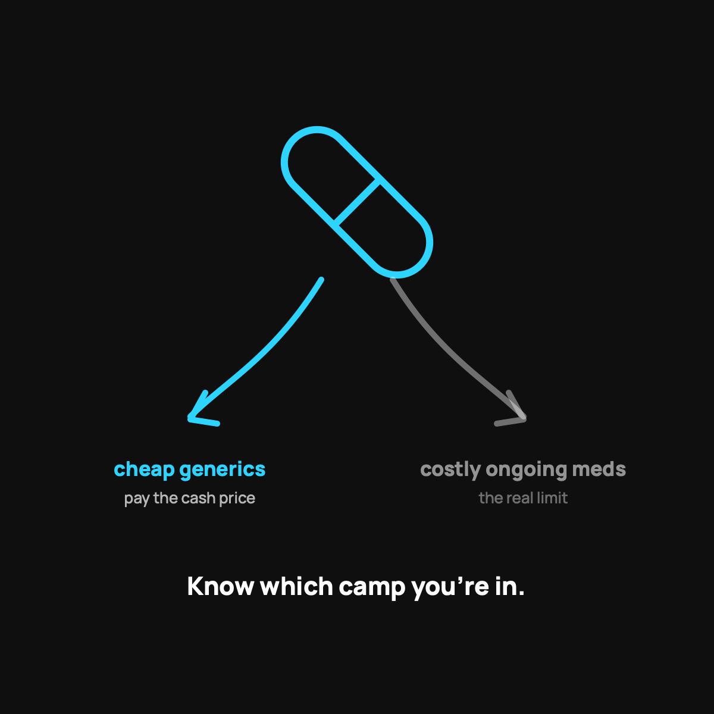

Health Sharing and Prescriptions: The Honest Version
Everyday generics are often cheap. Expensive ongoing meds are the real limit.
With health sharing you pay the cash price for everyday prescriptions instead of a copay, and for most generics that's a few dollars a month if you shop around with a free discount tool. Medications tied to a health event ride along with the event. The one real limit is an expensive brand-name drug you take every month.

This is one of the questions I get most, and it's a good one. "If health sharing isn't insurance, what happens to my prescriptions?" It deserves a straight answer, because this is an area where you need to plan, not assume. So here's how it actually works with CrowdHealth, the service my family uses, and where you're on your own.
First, the mindset shift
With regular insurance, you're used to a copay. You hand over a card, you pay five or fifteen bucks, and you don't think about the real price. Health sharing doesn't work like that for everyday medications. Instead of a copay, you pay the cash price for your prescriptions. And here's the surprise: for most common drugs, the cash price is cheap. Sometimes cheaper than your old copay.
Everyday prescriptions: usually no big deal
Most of the medications normal families take are generics. Blood pressure pills, antibiotics, thyroid meds, the common stuff. These are often just a few dollars a month if you shop the cash price.
The trick is you have to shop for it. Use a free discount tool like GoodRx, ask the pharmacist for the cash price directly, or check a low-cost pharmacy. The same pill can be four dollars at one place and forty at another. A little looking around goes a long way.
Big one-time prescriptions tied to an event
If you have a health event, say you break your ankle and need pain medication and an antibiotic afterward, those prescriptions are part of that event. They count toward your bill for it, and the community shares in eligible costs the same way it shares the rest. So the short-term stuff connected to something that happened to you is handled inside the normal process.
Where you need to be honest with yourself
Here's the part I won't sugarcoat. If you take an expensive, ongoing, brand-name medication every single month, health sharing is probably not your best fit for that. Sharing models are built for unexpected events, not for funding a predictable high monthly drug cost forever. That's a maintenance expense, and it doesn't match how the crowd funds things.
If that's you, read my honest who-should-skip-this breakdown before you switch. I'd rather you know now than get surprised later.
A quick gut check
Ask yourself two questions. Are my regular prescriptions cheap generics? And do I have any pricey, must-have-monthly brand-name drug? If your answers are "yes" and "no," prescriptions probably won't be a problem for you. If you've got an expensive ongoing med, factor that cost in with clear eyes.
The takeaway
Health sharing handles prescriptions differently, not worse, for most people. Everyday generics are often dirt cheap at the cash price, and event-related meds ride along with the event. The one real limit is expensive ongoing brand-name drugs, which the model isn't built for. Know which camp you're in before you decide.
Questions I get about this
How do I get cheap prescriptions without insurance?
Shop the cash price. Use a free discount tool like GoodRx, ask the pharmacist for the cash price directly, or check a low-cost pharmacy. The same pill can be four dollars at one place and forty at another. A little looking around goes a long way.
Are prescriptions after a surgery or injury covered by health sharing?
With CrowdHealth, medications tied to a health event, like pain pills and an antibiotic after a broken ankle, are part of that event and are shared the same way the rest of the eligible bills are.
What if I take an expensive brand-name drug every month?
Then health sharing is probably not your best fit for that cost. Sharing is built for unexpected events, not a predictable high monthly drug bill. Read Who Health Sharing Is Wrong For before you switch.
Curious whether it fits your family's meds and budget? Use my code NORMAL: see how CrowdHealth works (opens in a new tab). New members get their first 3 months at $99 a month with code NORMAL.
My family of four uses CrowdHealth and I really believe in the model. If you join through my discount link (opens in a new tab) (code NORMAL), you get your first 3 months at $99 a month, and Normaltown USA earns a referral bonus if you stick around. It costs you nothing extra, and I only refer you to things I would tell a friend about. Health sharing is not insurance, and nothing here is medical, tax, or financial advice.

Written by David Dewese
Normal guy with a full-time job, wife, and kids. Spent twenty years pursuing music and creative ventures before starting a family. Sharing tips and tricks on how to thrive while living on an artist's income. Not a financial advisor. More about me.
New here?
Normaltown USA is plain-English money and healthcare help for normal people, written by a regular guy with a family of four. No jargon, no hype. Start here, or read the FAQ.